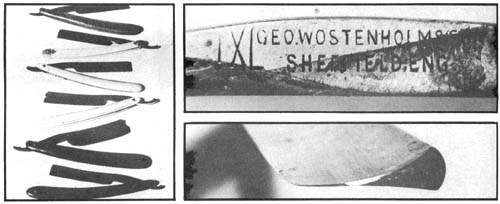
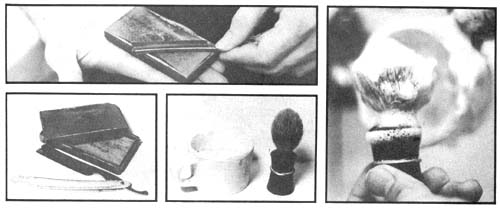
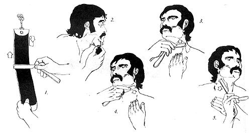

How To Use A Straight Razor
Advice on how to use a straight razor with selected tips on finding and buying one.
By John D. Meek
March/April 1972
It seems probable to me that many men spend a certain share of their lives engaged in that most ridiculous of Western Man's cultural rituals, shaving.
OK, some of us have to do it for one reason or another, to hold that job until the Time comes or to keep from having a scraggly, armpit-like growth on the face because we can't grow a good beard, or whatever.
But let's give the problem some thought. Short of electrolysis (preferably at an early age), there are only two basic methods of depilation: the electric razor and the blade. Each has its advantages, fewer cuts with the electric, a closer shave (in spite of what the electric razor manufacturers say) with the blade.
But there are disadvantages to each, too. Electric razors needlessly support the power companies, are initially rather expensive and require maintenance (which often involves sending the blamed things to the factory) from time to time. And suppose you want to go out into the woods for a while without coming back looking like one of the animals, what then? That electric razor is about as useful in the forest as a refrigerator. Very few trees come equipped with outlets.
Now consider the safety razor. Any male who's ever used one will attest to the fact that there's nothing safe about it. The first shave on a new blade leaves your face looking as if it's been gone over by someone in hobnail boots, and when the blade gets dull, the last shave is just about as bad as the first with the sole difference being that it hurts more. And what do you do then? You cuss, replace the blade and consign the old one to that little slot in back of the medicine chest.
How many tons of steel are consumed each year in this way, never to be seen again until and unless the house is torn down? I'd love to know how much steel and other less common metals we consume annually in the form of blades. The manufacturers are using platinum now and claiming 10 or 15 shaves per blade, the same number claimed for the stainless steel cutting edges when they were introduced seven or eight years back. This is an improvement?
Well, many moons ago, while picking a safety razor from the gouge in my cheek (it was quite literally hung there) I decided that there must surely be a better way. I had already been the electric route and found that it left much to be desired; for instance, a decent shave.
The next afternoon, while trucking around town, I dropped into a junk shop and there, in a display case, was something I hadn't seen outside a barber shop in years, a straight razor. The razor was in good shape, so I bought it and took it home. After a week or so of experiments (during which I cut myself, I think, four times) I got the hang of the thing with a little help from a friend who had used a straight razor before.
Since then, the results have gotten better all the time. I'm not babyfaced, but I can sure look like it with a little application, and the shave lasts the whole day instead of just a few hours.
After I'd learned the ins and outs of wielding a straight razor, I began to have fun with the stainless steel boys when they gathered to swap lies about the number of shaves they were getting from a single blade. I'd look around the group and top them all by saying, "I use a straight razor, and I'd hate to tell you guys how many shaves that one blade has given me."
I usually keep several straight razors on hand now. Most are hollow-ground (the best, most comfortable shaves obtainable come from hollow-ground straight razors) and some have pretty fancy handles, which doesn't help their performance any but which are nice to look at. All are in good working condition and all are first-class instruments. Every once in a while someone gets interested and I turn him on to this "new" method of shaving. Generally he goes away with one of the razors and a much happier face.
Here are some tips for the man who wants to try it:
(1) Don't buy a new razor unless you're sure that it does not have a stainless steel blade. Stainless steel won't hold an edge worth a good damn. Look for good quality old-time razors in your local junk and antique shops. Examine the blades of the ones you find, the best are made of Sheffield steel and are clearly marked so on the blade. Don't pay money for a fancy handle unless that's what you really want.
(2) Check the blade's cutting edge for nicks. Don't accept even the slightest imperfection and don't let the man tell you that such nicks will come out. It's your face, baby, and a jagged cutting edge will make it look like a battle map, and no, those nicks won't come out.
(3) If you think the blade is OK, have a look at the handle. It may be wood, bone, horn, celluloid or, possibly, some other material I've never seen. Make sure the handle is in good shape. Plain or fancy, its primary job is to give you something to hold the razor by and something to fold the blade into. If it's broken ANYWHERE , the razor is potentially dangerous to your face and your hands.
(4) You can lose a lot of flesh if the blade flops too easily. You're much better off with one that is hinged into its handle a little too tightly.
If you pay more than $2.50 for your used razor, you're getting ripped off. I have personally never shelled out more than $2.00 for a razor in Class A shape. If that's too steep, scrounge around. The one I'm using now didn't cost me anything. Lots of folks have grandpa's old shaving implement lying around rusting in a drawer and will be glad to get rid of it before little Wilbur finds the cussed thing and whacks off his arm.
Try barbers as a last resort only. A lot of them have abandoned the straight razor and changed over to using electric clippers on necks. They often have good razors lying around unused, but again, don't pay a premium for one. Remember, the barber doesn't need the thing and he's already making a living cutting hair, Western Man's second most ridiculous cultural ritual.
Once you have your razor, you'll need two things to keep the tool in shape: a stone to sharpen it and a strop to hone its edge nice and flat.
The stone is potentially the most expensive part of the deal. Expect to lay out from $2.50 to $10.00 for a good one, and make sure it's intended for razors and nothing else. Knife sharpening stones just don't make it with a straight razor, and I suspect they'll even ruin its blade. They're just too coarse.
A good strop is also mighty important because, if the blade on your razor is wavy, your face will be too. Antique and junk shops often have serviceable strops for a buck or less. Just make sure the face of the one you buy is smooth and not all cut up. A bit of saddle soap or bar soap or neats-foot oil (boot grease) applied sparingly will generally put an old strop into working shape.
For instruction in the art of using the straight razor, I firmly refer you to a barber, preferably an old one. Barbers often use one of these babies on themselves, and are usually delighted to demonstrate both the handling of the razor and its care and feeding. They'll tell you how and how often to use the stone, how to strop the razor without ending up with a frayed temper and a handful of shredded leather, and other little secrets.
For that matter, if you don't want to invest in a stone, you can often find a barber who'll put a new edge on your razor for free, or at least let you borrow his stone for the few moments it takes. I know, I've done it myself. The only problem you may have is in convincing your benefactor that you intend to shave with the thing, not use it on someone.
With a straight razor you can get a close shave with anything that'll put a good, moist foam on your face, but I personally won't touch the aerosol creams. You're being ripped off terrifically when you buy them, they're too thick and you always wind up wasting half of what you shoot out of a can, and the containers (which are still half full of goo when the gas runs out) present a recycling problem.
I use cup soap and a brush. (The best brushes are badger hair, which must give pause. Try the junk shops again. It's better to recycle an old one than to buy new.) Ordinary soap will work quite well, especially when you're going backpacking and don't want to tote along the cup variety as added weight, but do carry that strop. Your boots won't put a flat edge on a straight razor's blade. I know, I tried.
You can plan on cutting yourself about once a month. Better yet, skip that day and 14 others by shaving only every other morning. When you have a real razor that shaves as close as the straight ones do, you can hack off two days' worth of brush as fast and much easier than any other equipment will take off one.
At the risk of incurring some personal injury suits, the general idea of whacking whiskers with a straight razor (if you can't get someone who knows how to show you) is this:
(1) Always shave against the grain. That is, if your whiskers grow down, shave up. Shave cowlicks twice, once up and once down. When you make razor strokes only with the grain of your beard, you're not shaving, you're just scraping your face and it'll feel like it.
(2) Good concentration is absolutely essential until you get the hang of handling a straight razor so, at least at first, use a light touch, take your time and shave alone. Later, after you've mastered the art, you can let the kids watch or you can think about the compost heap while you shear your shag.
(3) Always mow in a direction 90 degrees to the length of your razor's blade. Never, never, never move that blade lengthwise across your face. Be especially careful when trimming around your mustache or 'burns, unless you want a nice scar to use as a guide in the future.
(4) Finish with a little alcohol (it's much cheaper than the perfume they sell for aftershave lotion and just as effective) and then go out and turn your buddies on to a really decent shave with about as little environmental impact as possible, a shave you can get anywhere (I've shaved in the rearview mirrors of my truck out in the wilderness).
If you pack your razor with you and it doesn't have a case, wrap a strong rubber band around the instrument a couple of times after you close it, to keep it closed. And don't EVER leave that thing lying around where your little boy can get it; children love to imitate paddy shaving, and emergency calls are expensive.
Well, there it is, an introduction to the finest shave in the world and the best, the greatest, the ONLY way to trim around mustaches and stylized beards such as goatees. With a straight razor you can select a single hair that's out of place and cut it off without touching another whisker. The tool will make beautifully straight lines for this job and, with a little practice, trim curves too. Just remember that you must never move that "razor sharp" blade lengthwise.
Shaving with a straight razor is a very simple idea that will preserve your face and, in some small measure, the environment, as well. Small measure? I may be nuts, but when I think of all those old razor blades rusting away inside the walls of houses, all those throw-away shaving cream cans, and all the raw materials and energy it takes to produce and market them . . .
|
 Left: Razors come in many styles and materials. Top: Sheffield steel blades are highly desirable and always marked "Sheffield, Eng." Bottom: This is what is meant by "hollow ground" : Note the Y shape of the blade. Razors not ground this way are tough to sharpen. |
 Above: About six strokes to a side from the back toward the edge of the razor should sharpen it. Keep thumb of hand holding stone down. Left: Razor and stone. I bought the stone from a barber for a buck. Its missing corner does not affect its performance. Middle: Cup and brush. Any cup will do but a badger hair brush (find one second-hand) is best of all. Right: Wet the brush in hot water and swish it around in the cup until you get this. You needn't do your whole face at once as the lather will sometimes dry out before you. get to it. |
 (1)Strop your straight razor before each shave. The stroke runs toward the back of the blade. (2) Lathering up. Especially at first-when you're going to be shaving very, very slowly-it's probably best to lather and shave only a small section of your face at a time. (3) Start on the neck and shave upward first, then (4) downward to catch all the whiskers. Keep skin stretched tight and note position of razor's handle in each illustration. It's not necessary to relather when going over an area the second time, if the skin is still wet. (5) Rotate razor's handle to keep it out of the way and balance blade and shave other side of neck. Handle positions shown are not absolute, whatever feels best to you will work best, so long as the thing is out of the way. |
 (6) Shaving upward on left side. Note position of hands, handle. Shave like this to the sideburn and NEVER move blade along its length. (7) Shaving downward on left side with jaw stretched tight and fingers out of the way. (8) Shave right side upward first, then (9) downward just like you shaved left side. Be careful around the mustache, it took a while to grow. The stroke used on the chin is like this one, parallel to the jaw bone. (10) Trim under mustache by holding it up away from the blade and shaving up to it. Again, keep skin as tight as possible. (11) The underside of the chin is done by stretching the head back to tighten the skin and shaving upward against the grain. Finish by sticking out jaw to hold skin and shaving upward under lower lip. |
|
|